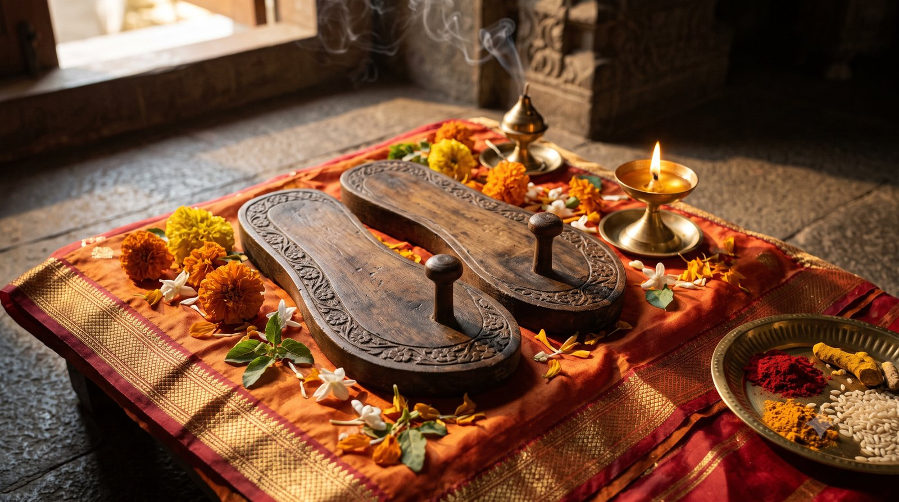

छह महीने में एक नया व्यक्ति
कल्पना कीजिए कि आप दिन के आठ से बारह घंटे गुरु के आभामंडल (aura) में बिताते हैं। वहां निरंतर कर्मों का आदान-प्रदान होता रहता है, और आपको पता भी नहीं चलता।
एक साधिका अपने अनुभव से कहती हैं कि यदि आप छह महीने ऐसे गुरु के सान्निध्य में रहें, तो छह महीने के अंत में आप पूरी तरह एक नए व्यक्ति होंगे। मानो नया जन्म हुआ हो। आपको याद भी नहीं आएगा कि आपका पहला जीवन कैसा था।
इस परिवर्तन के लिए गुरु एक साधन देते हैं: सेवा (selfless service)।
सेवा की बारी क्यों बनी?
शुरुआती शिविरों में आठ बजे शिविर शुरू होता था, और गुरुकुल की सफाई उससे पहले होनी थी। पंद्रह-बीस के समूह में वही चार-पांच लोग जल्दी आते, बाकी आराम से आठ बजे पहुंचते। सोच यह थी: पहले तो बस सफाई है, उसमें हमारा क्या काम?
गुरुजी ने देखा कि वही लोग बार-बार वही सेवा कर रहे हैं, खाना भी वही ला रहे हैं। तब सेवा की समय-सारिणी बनी। सफाई से लेकर हर कार्य, हर व्यक्ति को शिविर में कम से कम एक-दो बार करना है।
जैसे गुरु साधक को सिखाते हैं, वैसे कभी-कभी साधकों का व्यवहार भी गुरु को नए नियम बनाने की प्रेरणा देता है।
"इसके लिए तो रसोइया रख सकते हैं"
शिविर में सुबह आठ से रात आठ तक केवल एक बार भोजन होता था। वह कभी बाहर से नहीं मंगवाया जाता था। केवल सात्विक भोजन, गिने-चुने व्यंजन, और सबसे अच्छा फलाहार।
वक्ता बड़ी ईमानदारी से बताती हैं कि अपने पहले शिविर में उनके भीतर तमोगुण (जड़ता) और रजोगुण (बेचैनी) भरा था। सुबह उठकर बीस लोगों का खाना बनाकर सात बजे घर से निकलना कई लोगों के लिए सरल होगा, "लेकिन मैं उनमें से नहीं थी।" मन कहता था: इतनी शिक्षा है, इसके लिए तो कोई रसोइया रख सकते हैं।
पहले दस-पंद्रह दिन उत्साह रहा। फिर "थोड़ी चालाक बुद्धि" चलने लगी: यह काम छह महीने कैसे करेंगे?
जब पूरा समूह "विकल्प" लेकर पहुंचा
योजना बनी कि गुरुजी को अच्छे मन में देखकर बात की जाए। विकल्प तैयार थे:
- यहीं कोई सात्विक भोजन बनाने वाली रख लें, उसकी भी आमदनी होगी
- या सब अपना-अपना टिफिन ले आएं
पूरा समूह तुरंत सहमत था। आखिर घर से खाना बनाकर लाने से छुटकारा मिल रहा था! और सबने कहा, "बात करने के लिए तो आप हैं ही।"
गुरुजी शांति से सारी बात सुनते रहे। वे बहुत अच्छे श्रोता हैं, बीच में कभी नहीं रोकते। वक्ता आज उस दृश्य को याद करके कहती हैं: यहीं मैं गलत थी। और यह इसलिए बता रही हैं ताकि हम वही गलती न दोहराएं, क्योंकि जो दूसरों की गलतियों से सीखते हैं, वे अच्छे लोग होते हैं।
परिवार की परिभाषा कितनी बड़ी है?
सब सुनने के बाद गुरुजी ने कहा कि इतने साल अपना-अपना, मैं-मेरा करने में बीत गए, और पूछा कि उससे क्या मिला। उन्होंने कहा कि कभी तो परिवार का आकार बढ़ाओ।
घर पर बच्चे को सात बजे टिफिन चाहिए, तो हम उठते हैं, रोज नया व्यंजन बनाते हैं। फिर गुरुजी ने पूछा कि क्या ये पंद्रह लोग अभी परिवार नहीं हैं, क्या हम उनके लिए प्यार से बना नहीं सकते।
यही "बहुत बड़ी सीख" थी। सेवा का छोटा सा कार्य, जो गुरु सबमें बांटते हैं, यदि कोई उससे सच में सीख ले, तो पूरा जीवन बदल सकता है। क्योंकि उस कार्य के पीछे कोई बहुत बड़ा हाथ होता है।
आपके "परिवार" की सीमा कहां खत्म होती है? क्या कोई ऐसा है जिसके लिए आप प्रेम से कुछ कर सकते हैं, पर अभी तक "मेरा नहीं" कहकर टालते आए हैं?
वाणी जो संस्कार बन जाती है
उसके बाद एकत्व की भावना (oneness) से सुबह भोजन बनाना शुरू हुआ, और पूरा दृष्टिकोण बदल गया। परिवार की परिभाषा इतनी सीमित क्यों? वरना यहां दिव्यता सीखने का क्या लाभ? अचानक बिंदु जुड़ने लगे।
गुरु जो कहते हैं, वह केवल सुनी हुई बात नहीं रहती। वह हमारे संस्कार (गहरे मानसिक छाप, deep impressions) में उतर जाती है, स्थायी रूप से। अगली बार वैसी गलती का विचार भी आए, तो वह संस्कार सामने आ खड़ा होता है और गुरुजी का वाक्य मन में घंटी की तरह बजने लगता है।
तमस से रजस, रजस से सत्त्व
यह परिवर्तन एक सीढ़ी था। उस समय तमोगुण से रजोगुण तक पहुंचना हुआ, क्योंकि सुबह उठकर भोजन बनाने के लिए थोड़ा रजोगुण भी चाहिए! गीता में भगवान श्रीकृष्ण यही क्रम बताते हैं:
रजस्तमश्चाभिभूय सत्त्वं भवति भारत।
"रजोगुण और तमोगुण को दबाकर सत्त्वगुण बढ़ता है।"
(श्रीमद्भगवद्गीता १४.१०)
पहले तमस को दबाकर रजस में आते हैं, फिर रजस को दबाकर सत्त्व बढ़ता है।
हर दिन कोई नई परीक्षा, किसी नई गलती का अहसास। "सचमुच गुरुजी हमें धोते थे।" और फिर यह गहरी बात कि जब ऐसा लगता है कि पूरा जीवन गलत है, तो वही दिन है जहां से हमारे सही जीवन की शुरुआत होती है।
"अपने उपाय के लिए मत भागना"
एक यात्रा में सब अपने-अपने उपाय (remedies) करने गए थे। हर किसी में होड़ थी कि मेरा यह उपाय होना चाहिए। चार-चार बार रिकॉर्डिंग सुनी, कागज-कलम लेकर उपाय लिखकर ले गए।
पर गुरुजी की सीख एक ही थी: अपने उपाय के लिए मत भागना।
करना केवल एक काम है: गुरु की पादुका (Guru's sandals) का अनुसरण। गुरु गीता में भी यही कहा गया है। पादुका का पूजन यानी गुरु जिस मार्ग पर चलते हैं, उसी पर चलना।
और गुरु का मार्ग क्या है? वे कभी "मैं-मेरा" नहीं करते। उनकी अपनी व्यक्तिगत प्राथमिकता हमेशा अंतिम होती है।
शनि मंदिर, और गुरु का मौन बलिदान
यात्रा की अंतिम से पहली संध्या, सब शनि मंदिर में थे। लगभग सभी को शनि का उपाय आया था। सबका कार्य पूरा होने पर गुरुजी के मुख से निकला: "सबके सारे उपाय हो चुके हैं, पूर्ण।" सब प्रसन्न थे, यात्रा सफल थी।
पर उसी क्षण गुरुजी ने सबका सामूहिक हलाहल (विष, यानी सामूहिक कर्मों का भार) अपने ऊपर ले लिया।
उस रात आधी रात तक सत्र चला। अगली सुबह गुरुजी बाहर नहीं आए। शाम को पता चला कि उन्हें ज्वर आया था। पर जब शाम को वे मिले, तो चेहरे पर ज्वर का नामो-निशान नहीं था। योग और तपस्या से उन्होंने वह सारा हलाहल एक ही दिन में पचा लिया।
न कोई शिकायत, न यह भाव कि "क्या आप इसके योग्य हैं? मैं आपका हलाहल क्यों लूं?" वही प्रसन्नता, वही मुस्कान, वही ऊर्जा। किसी को पता भी नहीं चला।
आचार्य जी बताते हैं कि गुरु में मनुष्य बुद्धि हमें नहीं देखनी है। हम कभी नहीं समझ पाएंगे कि गुरु भीतर से क्या अनुभव करते हैं, शिष्य के लिए, और शिष्य के गलत करने पर। यह हमारी कल्पना से परे है। इसलिए गुरु जो कहें, बस उतना करना है।
क्या आपने कभी अपने गुरु या मार्गदर्शक के किसी शब्द को अपनी मनुष्य-बुद्धि से तौला है, बिना यह जाने कि उसके पीछे क्या था?
सात सौ किलो, और फिर भी "मैं खुश नहीं हूं"
यात्रा में दान बांटा गया, सात सौ किलो। सब बहुत खुश थे। पर गुरुजी बिल्कुल प्रसन्न नहीं थे। उन्होंने याद दिलाया कि श्री विद्या वाला यह देश, जहां बच्चा-बच्चा श्री विद्या जानता था, सोने की चिड़िया था, और आज इतना दान करके भी लगता है कि हम समाज के लिए ०.०१ प्रतिशत भी नहीं कर रहे। उन्होंने पूछा कि हमारी एक थैली लेने से उसका क्या हो जाएगा, अगले महीने का राशन उसको कैसे मिलेगा।
सेवा का अर्थ अपनी संतुष्टि नहीं, दूसरे की वास्तविक आवश्यकता है।
पादुका-पूजन का सच्चा अर्थ
जिस मार्ग से गुरु गए हैं, बस उसी पर चलना है। फिर हमारा कल्याण निश्चित है। अपनी सामर्थ्य के अनुसार थोड़ा-थोड़ा वैसा जीने का प्रयास ही सच्चा पादुका-पूजन है। वरना केवल चप्पल की पूजा करने से कुछ नहीं होगा।

मुख्य बातें
- गुरु के सान्निध्य में निरंतर कर्मों का आदान-प्रदान होता है; छह महीने में व्यक्ति नया जन्म जैसा अनुभव करता है।
- सेवा परिवर्तन का साधन है, और छोटे से छोटे सेवा-कार्य के पीछे बड़ा उद्देश्य होता है।
- "मैं-मेरा" छोड़कर परिवार की परिभाषा बड़ी करना ही असली सीख है।
- गुरु की वाणी संस्कार बनकर भीतर स्थायी हो जाती है।
- साधना क्रमशः होती है: तमस से रजस, रजस से सत्त्व (गीता १४.१०)।
- जिस दिन लगे कि पूरा जीवन गलत है, उसी दिन सही जीवन शुरू होता है।
- अपने उपाय के पीछे मत भागो; गुरु की पादुका का अनुसरण करो।
- गुरु शिष्यों का हलाहल चुपचाप अपने ऊपर लेते हैं; उनमें मनुष्य-बुद्धि न देखें।
- सच्चा पादुका-पूजन गुरु के मार्ग पर चलना है, केवल चप्पल की पूजा नहीं।